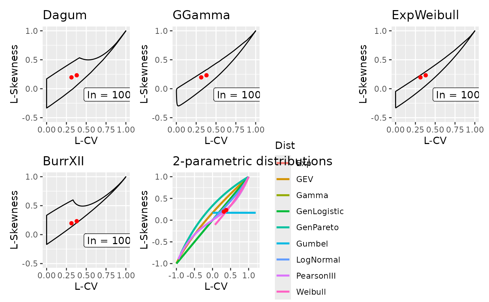

Tests whether the sample L-CV and L-skewness of one or more time series lie within the admissible L-ratio space of four 3-parameter distributions: Dagum, generalised gamma, exponentiated Weibull, and Burr type XII. Each distribution's theoretical L-ratio support is represented by a pre-computed polygon. The function identifies the sample points that fall within the theoretical space of each distribution and reports the percentage falling inside each distribution's support. A diagnostic plot overlays the sample L-ratios (red points) on the theoretical L-ratio boundaries, with separate panels for the four 3-parameter distributions and a fifth panel showing the 2-parameter theoretical L-skewness-vs-L-CV curves as a reference. This tool helps pre-screen which distributions are geometrically capable of representing a given dataset before fitting.
Arguments
- ts_lmoms
A data frame or matrix of L-moment statistics as returned by
lmom_stats, with rows including L-Skew (row 3) and L-CV (row 5). Multiple columns are treated as separate series.
Value
A list with elements distributions (per-distribution check
results and individual plots) and multi_plots (a combined
patchwork plot of all panels).
Examples
# Synthetic daily data
set.seed(42)
ts <- xts::xts(cbind(series1 = rgamma(3650, shape = 2, scale = 5),
series2 = rgamma(3650, shape = 3, scale = 7)),
order.by = seq.Date(as.Date("2000-01-01"), by = "day", length.out = 3650))
ts_lmoms <- lmom_stats(ts, ignore_zeros = TRUE)
lcheck <- LRatio_check(ts_lmoms)
lcheck$multi_plots
